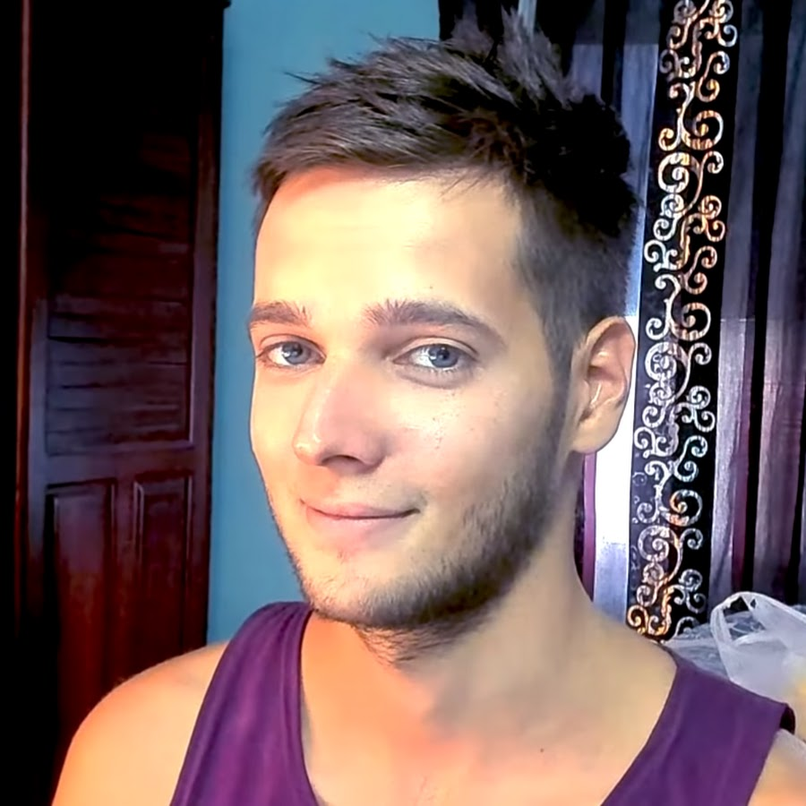

Этот хомосапиенс - блогер, геймер, филантроп, мизантроп, эхо-бумер Azazin Kreet
На данный момент он учавствует на турнире по дока 2 в команде "АК"

Его соцсети - Twitch
Чтобы сварить ЯЙЦА В КРУТУЮ! нужно (список нумерованный ol)
-
Вскипятить воду
-
Положить в кипяток яички
-
Ждать приготовления 10 минут
-
Есть ЯЙЦА
Ура
Распорядок дня (ненумерованный ul)
-
Поесть
-
Сходить в тубз
-
Поспать